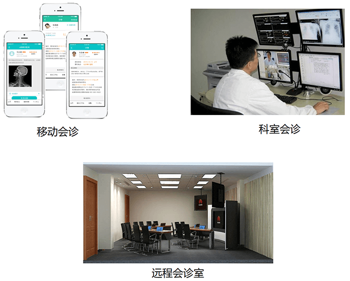

蓝创科技医联体平台充分应用现代数字化医疗手段，以信息网络、电子商务、物联网、大数据、云计算、移动互联网等先进信息技术为支撑，支持多种类型区域医疗联合体（简称“医联体”）的建设。

以标准化数据、规范化流程推动区域内各级各类医疗机构医疗业务的上下联动，支持区域卫生管理机构通过对医联体对传统医疗服务模式的改造创新，建立新型数字医疗服务模式和业务流程，以较小的成本优化整合区域内医疗卫生资源，完善区域协同医疗服务模式，实现区域内各级医疗机构的医疗资源共享，有效控制和降低医疗服务成本，引导患者改变就医行为，实现基层首诊和双向转诊的有序就医模式，促进区域内医疗服务水平的整体提升和共同发展，从而实现分级诊疗制度的落地。
用户需求
发展需求-按患者病情的轻重缓急在医联体体系内有序就医
应用需求-既可以在会诊中心会诊，也可以在科室、病床边会诊
诊断需求-会诊医生能够像给本院病人诊断一样，调阅浏览远程患者的各类信息
业务需求-既可以实现专科会诊，又能实现综合会诊
服务需求-实现对患者出院后个性化、连续的健康管理服务
远程会诊平台
通过远程会诊平台，可以充分发挥大医院或专科医疗中心的医疗技术和医疗设备优势，与医疗条件较差的边远地区疗机构或基层乡镇卫生院连接，可以提升其医疗技术水平，使大医院有限的医疗卫生资源发挥最大的作用，实现基层百姓也能享受到远地大医院专家的诊断、治疗和咨询需求。
电脑端会诊
移动端会诊
双向转诊管理系统
通过双向转诊管理系统实现基层首诊、分级诊疗、预约诊疗服务、双向转诊等辅助功能，形成“小病在基层、大病进医院、康复回社区”的就医格局，为加快分级诊疗制度落地和应用奠定基础。
影像集中诊断中心平台
通过远程会诊平台，可以充分发挥大医院或专科医疗中心的医疗技术和医疗设备优势，与医疗条件较差的边远地区疗机构或基层乡镇卫生院连接，可以提升其医疗技术水平，使大医院有限的医疗卫生资源发挥最大的作用，实现基层百姓也能享受到远地大医院专家的诊断、治疗和咨询需求。
影像集中诊断中心的建立，进一步为提升乡镇卫生院、社区卫生服务中心医疗服务能力提供强有力的技术支持。
产品优势
产品价值
典型案例
-项目背景
新疆沙湾县是新疆地区经济优先发展较快的县市之一，辖区面积1.新疆沙湾县人民医院是一所县级综合性二级甲等医院，医院设有29个临床医技科室和10个职能部门，在县卫计局和人民医院的共同设计和规划下，开展了县域医联体平台的建设。
-应用效果
通过医联体平台的实施，实现了沙湾县人民医院与基层12个乡镇卫生院之间的远程会诊和双向转诊业务，既发挥了县人民医院专业技术优势及带头作用，提升了其知名度和影响力，又帮扶和提升了当地基层医疗机构的医疗服务水平，让老百姓真正享受到了“小病在社区、大病去医院、康复回社区”的分级诊疗制度。